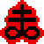
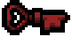

Formulario de Isaac de multiples elecciones
¿Cuantos logros tiene el juego?
612
631
640
656
613
600
642
¿Cuantos objetos tiene el juego?
714
700
715
717
703
712
723
¿Cuantos desafios tiene?
49
40
50
45
46
48
42
¿Cuantos personajes tiene en total el juego?
33
34
35
30
32
29
¿Que dan los Clavos de 8 Pulgadas?
-1.5 de daño.
+1.5 de daño y aumento del empuje.
-1.5 de daño y dismunucion del empuje.
+2.5 de daño.
-1.0 de daño y aumento del empuje.
nada.
¿Que hace el Libro de las Sombras?
Hace aparecer un objeto aleatorio.
Hace aparecer bombas trolls.
Te da +3.5 de daño.
Te da 10 segundo de invencibilidad.
Provoca 40 de daño a toda la sala actual.
Provoca que aparezcan dos corazones rojos.
¿Que hace el Holy Mantle?
Te protege del primer golpe de cada sala.
Tiene una probabilidad de repeler los proyectiles.
Te da un +1 de velocidad.
Te da un aura que provoca daño a lo este dentro.
Te tres corazones azul.
Te permite hacer instakill al corazon de mama.
¿Que personaje tiene un Trinket que deja abrir cofres de sin usar llaves?
The Lost
Isaac
Cain
???
Eden
Judas
¿Que personaje Alter tiene que conseguir todo por dinero?
Apollyon
Keeper
Eden
Azazel
Eve
Isaac
¿Que personaje tiene las siguientes estadisticas?
Cain
The Forgotten
Eden
Judas
Azazel
Lilith
¿Cuál es la diferencia principal entre Sacred Heart y Godhead?
Ambos aumentan igual el daño, pero Sacred Heart da aura y Godhead lágrimas con homing.
Sacred Heart multiplica daño y da homing, Godhead da aura de daño adicional.
Godhead duplica daño, Sacred Heart solo da rango extra.
No hay diferencia, ambos hacen lo mismo.
¿Cómo se desbloquea The Lost en Afterbirth+ (sin glitches)?
Derrotando a Hush sin recibir daño.
Muriendo en orden específico con Isaac, Magdalene, Judas y Azazel.
Llegando a The Lamb con ???.
Jugando 100 runs con Eden.
¿Qué pasa si combinas Soy Milk con Brimstone?

El rayo desaparece y solo se dispara aire.
El láser se convierte en un rayo continuo de baja potencia pero altísima cadencia.
El juego crashea.
No hay efecto especial, se suman normal.
En Repentance, ¿qué jefe secreto aparece después de derrotar a Mother y avanzar por el camino del ascensor roto?
Mega Satan.
The Hush.
The Beast.
Delirium.
¿Cuál es la diferencia entre Red Key y Cracked Key?

Ambas sirven para abrir cofres rojos, pero con distinta probabilidad.
Red Key crea habitaciones rojas infinitas, Cracked Key solo una vez.
Cracked Key desbloquea cofres angelicales, Red Key demoníacos.
Ninguna, son lo mismo con distinto sprite.
¿Cómo se desbloquea Jacob & Esau en Repentance?
Al derrotar a Mother por primera vez.
Al vencer a The Beast con Isaac.
Al completar Boss Rush con Eden.
Encontrando un objeto especial en The Void.
¿Cuál de estos objetos es considerado uno de los más raros y solo puede salir en situaciones excepcionales?
The D6
Sacred Orb
Brimstone
Polyphemus
¿Cuál es el efecto real del objeto Chaos?
Convierte todos los cofres en rojos.
Mezcla la tabla de ítems de todas las pools, permitiendo que salga cualquier ítem en cualquier lugar.
Duplica los ítems de jefe.
Hace que los enemigos suelten pickups raros.
¿Cómo se desbloquea el personaje Apollyon?
Derrotando a Mega Satan.
Venciendo a Hush por primera vez.
Matando a The Lamb con Judas.
Consiguiendo 100 victorias seguidas.
¿Qué hace el objeto activo Dull Razor?
Inflige daño a Isaac, pero sin perder corazones, activando efectos de “on damage”.
Incrementa el daño de las lágrimas.
Convierte las lágrimas en cuchillas.
Da corazones rojos al usarse.
¿Cuál es la principal diferencia entre Eden y el resto de personajes?
Eden tiene daño fijo y no puede mejorarlo.
Eden siempre empieza con The D6.
Eden comienza con ítems, estadísticas y apariencia aleatorias cada run.
Eden no puede recoger ítems de jefes.
¿Qué condición especial se necesita para luchar contra Delirium?
Llegar a The Void tras derrotar a Hush o Mega Satan.
Morir en la Boss Rush.
Abrir todos los cofres dorados de The Chest.
Derrotar a Mom Heart en menos de 20 minutos.
¿Qué transformación se obtiene al recoger tres ítems relacionados con moscas u arañas?
Bookworm.
Guppy.
Beelzebub.
Seraphim.
¿Cuál es el efecto especial de Birthright con el personaje The Lost?
Aumenta su daño x2 permanentemente.
Hace que no aparezcan objetos inutiles para el personaje.
Hace que todos los cofres sean gratis.
Le otorga un “Holy Mantle” adicional (dos golpes gratis por habitación).